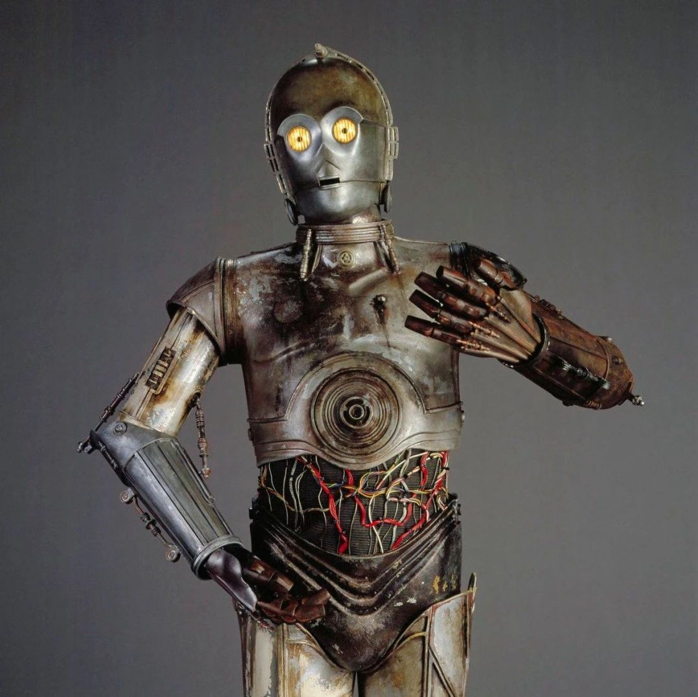

SeeDAO投稿 | 读《SeeDAO白皮书：数字城邦》沉思，我是人吗？
作者: 行天春彦
分类:
SeeDAO, Web3, SeeDAO投稿
我们相信，每个人生而有其“道”，或曰其天命与天性。

缘起： SeeDAO和Deschool 是我在web3中的起点，虽然初中（08、09年）就有缘遇到过比特币这个概念，大学（14、15年）也简短地关注过一段时间区块链挖矿的消息，但醉心各种游戏的我始终没能静下心去真正了解有关区块链技术的真相。还曾一度断言区块链将是骗局，当然，直到今天我仍保留部分关于这个断言的意见。
既然如此不看好区块链技术，我又是如何愿意进入Web3的世界呢？
我想无非是希望与真香。在我过往人生中的很长一段时间里，我都将自身所处环境中存在的种种虚假与不公当成了自己放纵的理由，而矿潮和矿难更是在我粗浅的认知中被描述为纯粹的欲望膨胀和泡沫破裂。
直到有关NFT的视频大量出现在B站的推荐内容中，一位12岁画鲸鱼的英国男孩在NFT作品中取得的巨大成功让我意识到我自身的行为与我所宣扬的理念是不一致的（小孩是能被洗脑，但我不太相信创作出非阴间艺术作品的孩子是“没人性”的状态）。注：此处“人” 指万物之灵
在那段自我反思的时间里我看到了自己，在很长时间里是极度双标的状态，认为现实不够好但我只接受并不改变什么。于是我就知道我所有的问题都源于自己的懦弱和对自身权利的放弃，我为自己的生活按下暂停键，开始尝试认真地对待自己的生活。
所以当我在22年见到Web3的概念，然后重新去看与区块链相关东西的时候，理解了少许它们的意义 这让我充满期待。但因为一些法律的限制我并没有积极地加入Web3的活动，只是有一搭没一搭地看着零星的信息。
直到去年9月我到达新加坡开始硕士的学习，正好一位亦师亦友的长辈告诉我Deschool和SeeDAO的存在，那个时候我想我的Web3之旅可以开始了。所以我快速地在Deschool上完成了登船指南，找到SeeDAO的Discord完成了认证，想要了解事实是否真如登船指南所说。
挡在我前面的问题不多，随着我学习的内容增加，我愈发理解SeeDAO的运营逻辑，尤其在学完关于SeeDAO角色身份体系的课程后我不由地产生了一个相左的想法：如果社区中超过50%的人是“恶”的，是损公肥私的，那么这个社区在某种意义上会比传统的组织更令人绝望。
这个想法到现在都还萦绕在我的脑海，这一度让我有些难过，让我犹豫是否加入这样一个对于成员的公平来说趋近完美并且不断追求完美的组织。尤其在看到SeeDAO白皮书中的城邦叙事，我便想问问自己，不论他人如何，我是否具备加入的基础条件。
“我们相信，每个人生而有其“道”，或曰其天命与天性。好的生活应该让每个人充分发挥自己的天性，展开自己内在的“道”，从而实现自己的天命。涌现正是个人的“道”（内在秩序）在城邦中逐步展开和发展的过程，是实现个人自由的必经之路。它最明显的三个特征是作、作品与生成式主体。
“作”是人类的基本特征。人并非活在一个冷冰冰的物理世界里，而是活在不断被自己理解和建构的事件中。由于具备主观能动性和行动力，人需要在一个又一个的事件中做出选择，并以自己的行动参与对世界的改变，这个过程我们称为“作”，涌现是个人在城邦中存在的形态。”—— SeeDAO 白皮书：数字城邦
这个问题源于SeeDAO的叙事和愿景下的角色和身份设定，源于我在Deschool的学习，当然更多源于我个人对社会的理解。在现代社会中，人指的是居住在社会中的个体，具有自我意识、思维能力和情感体验的生物。人类在社会中扮演着各种角色和身份，从家庭成员、朋友到职业工作者、公民等等。他们参与各种社会活动，与他人互动，创造并塑造着社会的发展和变化。以上这段话是Notion的AI对问题“什么是现代社会中的人”给出的答案。我不知道，也从未查证，是否有哪些专家学者对此作出过明确的定义，但我根据自己所看到、接触到的人和事情对此有着相似的理解。因此我也意识将前面这些总结性的词语拆开细说，就会发现有许多需要阐明的概念，比如个体，比如自我意识，思维能力和情感体验。搞明白这些概念，或许对参与Web3有一些间接的帮助。我所好奇的是，划分个体的逻辑是以我的身躯为主，还是以意识为主？较为常见的观点是以意识为主，否则将难以面对自己和他人经历的种种苦难，总不能因为车祸少了腿断了臂我就不是人了吧？那么如果我有一个意识相连思维同步情感共通的双胞胎，我和他要算做个体吗？如果我是所谓的精神分裂的情况还算个体吗？那么加上躯体的条件呢？比较常见的人类身躯的外在形象是相似的，其所承载的自我意识似乎大多是唯一且独特的。那么个体是否就是指在单独的身躯中有着唯一的意识呢？似乎也不太对，这只考虑了躯体构造减少的可能而没有考虑躯体构造更复杂的情况。比如身躯类似DOTA2里蓝胖子形象（一个身子两个头）也算个体吗？
如果算的话，要以哪一个头里的意识为主？是更具逻辑的那一个还是声带更发达的那一个？还是说将他们排除出个体的考虑范围？如果将他们算成两个个体，没有问题，假设两个头各有意识，在玩扑克的牌桌上，他们的身体只能拿一把牌，毕竟只有一双手，这时两颗头分别看自己的牌和别人的牌，算不算看自己牌的头作弊呢？如果不算呢，那么要蒙住看别人牌的头的眼睛吗？为什么要因客观因素对两个个体区别对待呢？如果不算作弊，也不蒙住另一个头，那么假设一会儿右头看自己牌左头看别人牌，一会儿左头看自己牌右头看别人牌又要怎么办呢？如果两个头之间没有其他人可以观察到的交流的话是不是可以等同于打一半换人呢？如果不行，那么凭什么站起来换人可以，更快捷简单的换头不可以呢？如果要求两个头都看向自己的一副牌，但这导致他们不舒服怎么办？他们因想法不同都出不了牌怎么办？就此便不允许两个头的玩家参与扑克游戏了吗？在现实生活中大概率会是这样的结果。所以我们并不知道什么是个体，只是将常见的情况定义为正确的答案。可能都不过是为了维护这种状况而被制造出来的借口和工具罢了。那么这就产生了一个不可忽视的问题，如果我们无法判断自己是否是一个个体，也无从评判他人是否是一个个体，我们何以为人？难道只有符合常见定义的才是人吗？还是说只要我们愿意将自己称为人就是人了？好，到此已经满足了我对这一概念进行诡辩的恶趣味，来聊聊实际的。在Deschool上学习DAO的运营时，我逐渐能够理解Web3世界中的个体。对于Web3世界来说，个体实际是按“躯体”划分，以唯一的加密钱包地址为准。这个地址的拥有者是谁都可以，这个钱包同时在无数个意识主体的支配下也无所谓。因此这是通过规范“躯体”的形状规避掉躯体差异制造的种种判断困难。但相对的，正如新手营导师所提醒我们的，地址这种“躯体”并不属于谁，一旦丢失控制权，就相当于意识消失了。所以接下来正好进入下一个概念。我所好奇的是，自我意识到底是以意识到自己存在为标准，还是以能够让他人意识到自己的意识存在为标准。我提出这个疑问的原因是，如果被他人认为自己的意识不存在，就会被定义为死人，那么就有一个新的问题。按照AI的阐述，死人似乎并不能算作是人，哪怕跳过个体概念，之所以是死人，正是因为没有自我意识，没有思维能力，没有情感体验。所以，死人应该是“死人”，而不是“死”人吗？可是人哪怕已经逝去，他曾经通过自我意识留下的一切痕迹就不被认同了吗？所以从未展现过自我意识就离世的婴儿就不是人吗？显然这是脱离生活实践的，因为在亲朋好友离世后，我们会在接受他们离开的同时保有他们是人的认知。想必大家都有关于好莱坞电影中缅怀逝者场景的记忆，他们会说逝者是个好人，是个英雄，巴拉巴拉。当然也有时候会说他是个死人，即便说，也是存在着复杂的感情或者敌对的关系，是一种通过陈述事实发泄情绪的方式，而并非将“死”人定义为“死人”。说了这么多，我们可以发现自我意识对于人的定义似乎是不准确的。尽管如此，自我意识在通常的解释和认知中都是用以划分的核心概念，并且是以意识到自己的存在为标准的。在我记忆中的天行者安纳金制造的机器人3PO，它抬手挪步的动作就是对意识到自己存在的经典诠释。但是在社会生活中我们知道有几种特殊的情况，比如包括刚刚出生体征正常但不论怎么拍打都没有任何反应的婴儿，比如所谓的植物人。他们所有的反应几乎都体现在医疗仪器的屏幕上，一旦医疗仪器在“工作正常”的状态下停止反应，那这个人即被判定死亡。所以我们可以发现意识到自己的存在对于社会中的人的定义是不重要的，反而被意识到自己有意识是重要的，而被意识到的关键是某种直接或间接的现实反应。因此我们可以尝试总结，结论我想大概是：通过现实反应被理解和接受的自我意识。这部分思考让我联想到SeeDAO的角色和身份体系，同样也与上面个体部分的讨论相联系。在Web3中的自我意识要通过各种形式的POW来展现，而这正契合刚刚得到的结论。而与“个体”也就是地址相互绑定的SBT，恰巧可以被认为是意识通过躯体留下的活动痕迹。它们的意义非常简单直接并且不会被篡改，因此组成了SeeDAO发展的正史。而作为补充，在Cascad3平台里，不同个体通过发言写作将丰富的涵义组成了SeeDAO的野史。我是这样理解，至于准确与否我并不知道。三、思维能力
在AI技术高速发展的今天，算法的丰富和成熟使思维能力的判断逐渐变得模糊，甚至模糊了对自我意识的判断。我好奇的是，思维能力除了关注逻辑推理的能力和理解逻辑本身的能力，是否还有其它内容，又要怎样判定。这两种能力间的区别几乎等于“会使用科学公式”与“能够理解推导科学公式的过程”的区别，但科学公式存在简繁各异的版本。如果我能通过两根油条理解最简单的数学公式1+1=2，但我因为不看自己而将自己与另一个人认为是一个人，我算有思维能力吗？按照逻辑推理的能力来看，似乎没什么毛病，一个加一个就是两个。按照理解逻辑本身来看，似乎也没啥问题，看到几个就是几个。如果这时候有人跳出来问我为啥不算自己，那这个人比我更有思维能力吗？问题的本质很简单，仅仅在于我的判断逻辑与他人不同，我将自己设置成了旁观者，而他人将自己设置成了参与者。我将自己设置成旁观者是因为我和油条不一样，我秉承这一点，在没有明确说法时将自己始终定义为旁观者，而他人在面对与自己类似的同类时转变为了参与者。难道说这种转变所对应的，能够意识到存在转变逻辑的可能才是思维能力的根本？好像有点意思了，这不仅让我想起赵本山小品中的树上骑（七）只猴和地上拾（十）只猴。赵本山小品截图 图片来自网络侵删
如若不是这样，那么将很难解释在人类社会的许多协作中对我那种“一根筋”状态的排斥。就比如上面的那个我，以毫米为单位丈量并建设一栋百米高楼，最终成果的精度也许不差，只是想来不停地数零多少都会耽误时间。这正是我对Web3的感受，我必须具备适时转换逻辑的能力，必须要明白不同概念之间的联系。比如SeeDAO积分与现实生活的关系，此前的说法是10万积分 =1SeedNFT = 1ETH = 大约3000美金的贡献，由此可以知道NFT的地板价越高积分越有价值，我能获得的收获越多。(最近SeedNFT 上涨约等于1.5ETH)比如SeeDAO中角色和身份的关系，比如只有拿到Seed才具备成为节点的资格，这样也就理解获得更高的身份等级才被允许成为更重要的角色。而后在我了解到加入FWB DAO需要有一枚价值不低的NFT后，我也就明白了Web3还是一个看似公平但更残酷的世界。而设置加入门槛的方式是为了避免这一方净土被中心化污染，必须对每一个加入者进行的验证，但其本质在我看来等同于圈地盖房。尽管我可以通过几扇任何人都能看到的窗户和院门设立的大喇叭了解屋内人的动作，但由于我进不去房间甚至院子，因此我所能看到的仍然只是部分过程和结果，也就是链上的信息，而没有上链的内容则无从考证。就好像爱泼斯坦和他运营的萝莉岛，世人哪怕知道了名单，知道了这个岛上的活动，又如何确定这些内容不是经过精心设计用来掩盖更大阴谋的结果呢？所以尽管Web3相对公平，但我们能够知道的事情仍存在着被设计的嫌疑。这也就是我对SeeDAO感兴趣的地方，SeeDAO通过对元规则的设计向着更公平公开的方向进行着努力，虽然距离真正实现完全的去中心化还有一段距离。同样也搞着圈地盖房的事情，但至少院子是栅栏围起来的对我半开放的，房屋是有着超大落地玻璃窗且开着门的，在目前这个阶段，这是非常积极的。一切更高级的权利都是在相同规则下进行等量付出后得到的，因此也不同于现实世界，哪怕有领袖有高层，也很难再出现林立果那样的情况了。在这个概念中我所好奇的问题是如果我对社会不能理解的主体产生情感体验还算人吗？我想能看到这里的朋友大概都是有着相对比较容易波动的三观的，并非贬义，只是代表认知还有变化的可能。否则面对前面那些漏洞百出的各种狡辩，各位定然感到非常无语且早早离去。我提出这个疑问的原因源于我对三观朴素的认知，对物质世界和精神世界的认知构成了世界观，对物质世界和精神世界的情感选择组成了价值观，对物质世界和精神世界的追求高度形成了人生观。按照我的这种认识，情感是基于世界观的价值观的一部分，因此超出他人的世界观之后必然存在着超出他人理解的情感。按照一般的逻辑，毕竟这是属于我的体验，因此可以算。但我因此做出他人无法理解的行为呢？就比如那个非要清除宇宙中一半人的灭霸，比如所谓的中世纪女巫。因此在现实中，当我们的情感体验不能被理解且不被接受时，似乎就变成了所谓的精神疾病。我在物理世界和精神世界中的一切行为是否能被认定为自己的情感体验，仍然是一定要有被他人观察到并理解和接受的活动才算。这种状况在Web3世界中实际是被放大了，达成共识在许多时候仍然是大多数人的理解，无法达成共识将导致解散。因此超过大多数人理解的状况不论对错，都将变成躲避疯子、驱逐傻子、无视愣子的过程。如此看来Web3与现实世界相比摒弃了一部分人道主义精神。不过也能理解，毕竟在Web3中的每一个动作都伴随着Gas费的消耗，而不像物质世界中的我可以免费享受空气。更何况在现实世界我也喝不到金广发的一滴水=.=我在SeeDAO第五期新手营深度参与了共画与非这个项目，我觉得很有意思。通过共画，我用低廉的价格参与到了区块链的运转过程中，对Web3中的一些概念有了直观的认识。那些被别人称为垃圾NFT的像素点给了我丰富的参与感，给了我认识和结交新朋友的机会，给了我对去中心化的思考，至少它们在这一刻对我来说非常珍贵。所以我始终认为参与创造得到的情感体验要大于在交易过程中获得收益的情感体验，至少在现实世界中实现财富自由的目的就是能够尽可能多地参与体验不同的创造方式。哪怕说是躺平，大部分其实是避开消耗自己的社会活动，而不是停滞自己思维的发散、作的行动。一旦人的情感体验以获得收益为主，便很难停止不由自主地进行价值判断，所有能够产生或已经产生巨大价值增幅的“资产”都将被赋予价格。这也正是拜金之所以被讨厌的原因，并不是拜金有错，而是大量打着拜金之名的人却是行那令人作呕的苟且之事。写在最后
啰啰嗦嗦一大堆还请不要介意，下面就简单总结一下，脱离混乱回到秩序。暂且不论现实社会中何以为人（实际是我给自己绕晕不愿想了）。在Web3中，只要你有一个满足门槛的钱包地址，有相应的技能，有明辨事理和清晰表态的能力，就算是一个人了。但如果你有一百个满足门槛的钱包地址，有许多种行业发展需要的技能，有许多种观察问题的视角和清晰表态的能力，那就算一百个人了，至少现在可以是这样。至于一个人与一百个人到底算几个人，我想对于不同的DAO来说是不一样的，但对于SeeDAO这样一个致力于树立榜样的城邦来说，可能是一个值得探讨的问题，至少在投票中似乎应该对人的性质要有所规定。从这个角度看，目前的规则是存在着优化空间的，而WorldCoin的 Web3护照的价值似乎也在这里，也就是说对于人的定义在Web3世界还有着广阔的讨论空间，这一切才刚刚开始。